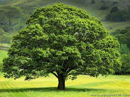
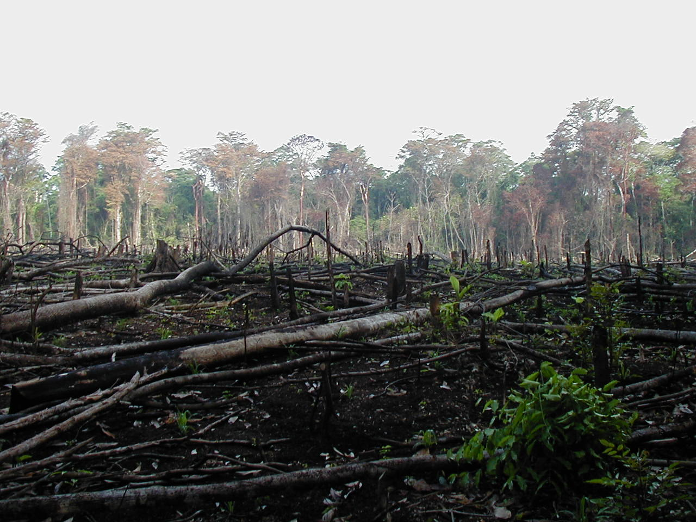

Les arbres jouent un rôle essentiel en tant que poumons de notre planète, offrant de nombreux avantages environnementaux. Tout d'abord, les arbres sont indispensables pour la purification de l'air. Ils absorbent le dioxyde de carbone et libèrent de l'oxygène, un processus vital pour la survie des êtres vivants. En capturant le carbone, les arbres contribuent également à la lutte contre le changement climatique en réduisant la quantité de gaz à effet de serre dans l'atmosphère. Ensuite, les arbres jouent un rôle crucial dans la régulation du climat. Ils agissent comme des climatiseurs naturels, rafraîchissant l'air par l'évapotranspiration. Cette capacité à réguler la température locale est particulièrement importante dans les zones urbaines, où les arbres peuvent réduire l'effet d'îlot de chaleur et améliorer la qualité de vie des habitants

La déforestation et la dégradation des forêts sont principalement des conséquences d'activités humaines et impactent les personnes dans le monde entier.Agriculture industrielleL'agriculture est le principal moteur de la déforestation dans toutes les régions sauf en Europe.La conversion des forêts en terres cultivées est le principal moteur de la perte de forêts. Selon la FAO, elle est à l'origine d'au moins 50 % de la déforestation mondiale, principalement pour la production de d'huiles de palme et de soja.En Europe, la conversion en terres cultivées représente environ 15 % de la déforestation et 20 % est due au pâturage du bétail. Ce dernier est d'ailleurs responsable de près de 40 % de la déforestation mondiale.